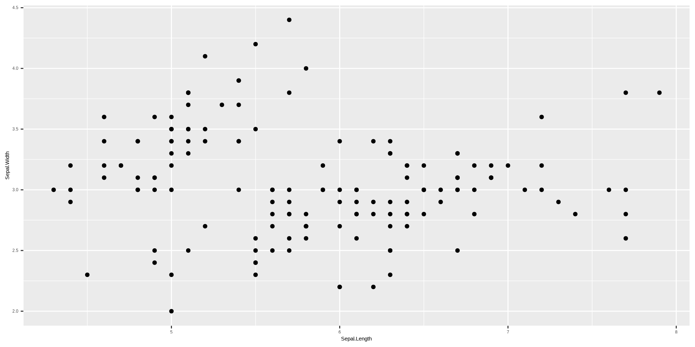
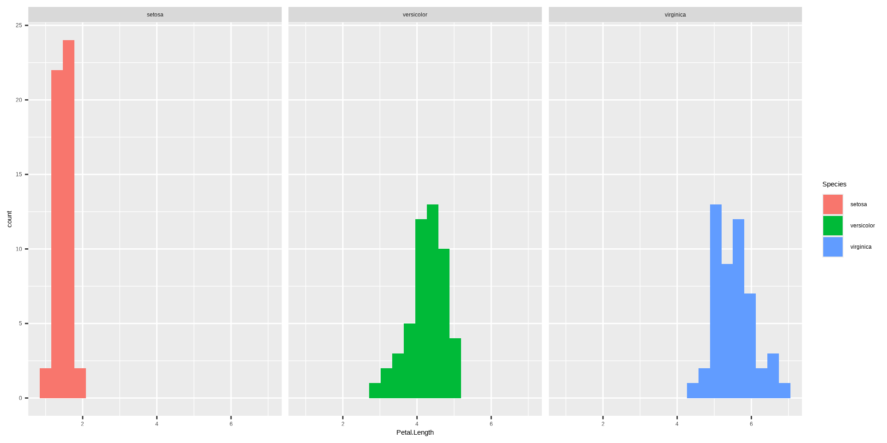
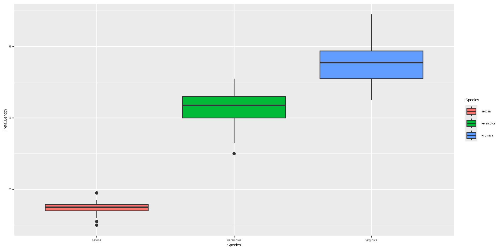

x = 5
print(x)[1] 5x[1] 5y = x
print(y)[1] 5x = 3
print(x)[1] 3print(y)[1] 5Advanced Statistics Lab
Ubuntu:
From the developers: Introduction to R
RStudio: Documentation
Note: R has two assignment operators, <- and =.
name age
2 Paul 43 name age
1 Adam 22
3 Elly 54 name age id id_2
1 Adam 22 1 3
2 Paul 43 2 4
3 Elly 54 3 5 name age id id_2
1 Adam 22 12 3
2 Paul 43 2 4
3 Elly 54 3 5dat = data.frame(
name = c("Adam", "Paul", "Elly"),
age = c(22, 43, 54)
)
write.table(dat, file = "my_data.csv", row.names = FALSE, sep = ",")
dat_read = read.table(file = "my_data.csv", sep = ",", header = TRUE)
str(dat_read)'data.frame': 3 obs. of 2 variables:
$ name: chr "Adam" "Paul" "Elly"
$ age : int 22 43 54 int 1[1] TRUE num [1:10] 0.94 -0.422 -0.852 0.782 1.037 ... [,1] [,2] [,3] [,4] [,5]
[1,] -2.2153940 1.2068161 0.3856771 -0.7060726 1.2108538
[2,] -0.2066167 0.6087701 -2.0697038 -0.1029963 0.7491026
[3,] -0.7123613 -0.6905677 0.3504965 -0.6409511 -0.7333024
[4,] -1.0628546 0.8516926 0.0163154 0.4327210 -0.8639295
[5,] -0.4771185 0.1777331 0.9936057 0.4095861 0.4688998[1] "matrix" "array" 'data.frame': 150 obs. of 5 variables:
$ Sepal.Length: num 5.1 4.9 4.7 4.6 5 5.4 4.6 5 4.4 4.9 ...
$ Sepal.Width : num 3.5 3 3.2 3.1 3.6 3.9 3.4 3.4 2.9 3.1 ...
$ Petal.Length: num 1.4 1.4 1.3 1.5 1.4 1.7 1.4 1.5 1.4 1.5 ...
$ Petal.Width : num 0.2 0.2 0.2 0.2 0.2 0.4 0.3 0.2 0.2 0.1 ...
$ Species : Factor w/ 3 levels "setosa","versicolor",..: 1 1 1 1 1 1 1 1 1 1 ...# A tibble: 5 × 6
variables types missing_count missing_percent unique_count unique_rate
<chr> <chr> <int> <dbl> <int> <dbl>
1 Sepal.Length numeric 0 0 35 0.233
2 Sepal.Width numeric 0 0 23 0.153
3 Petal.Length numeric 0 0 43 0.287
4 Petal.Width numeric 0 0 22 0.147
5 Species factor 0 0 3 0.02 


All operators in R are functions.